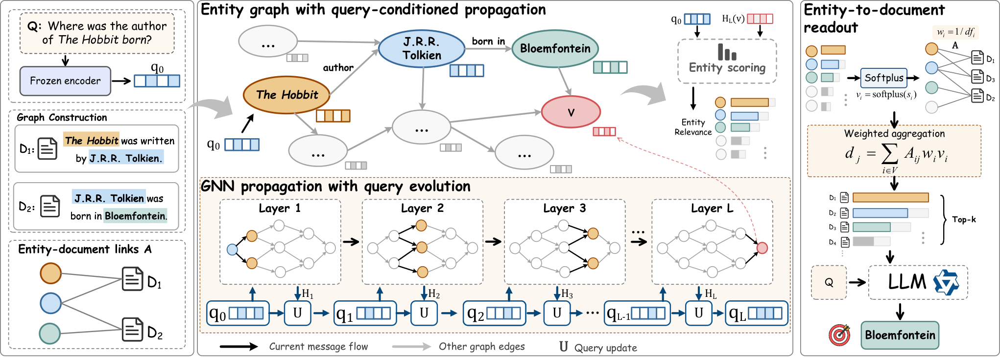
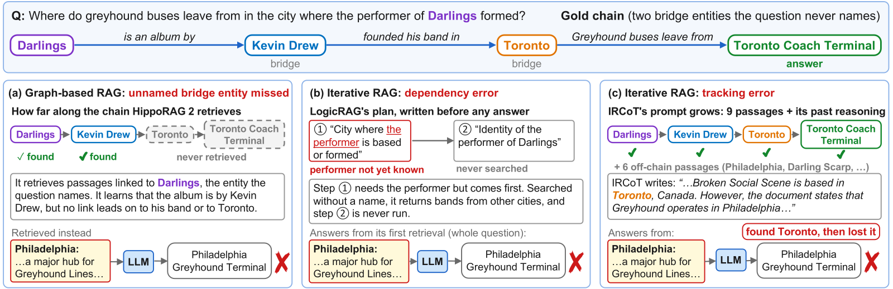
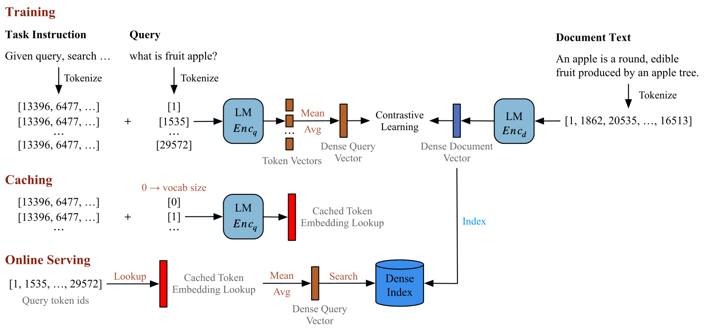

这篇论文做了一个边找边改问题的多跳图检索器 QueryFlow：图上每传播一层，它就把已找到的上下文压成一个摘要向量，并入问题状态，再用新的问题状态引导下一层怎么找。之前的图检索器，比如 GFM-RAG，整个传播过程一直用最初的问题当条件。可多跳问答里，有些证据单看原问题并不相关，要先找到中间的事实才显得有用。在四个多跳问答数据集上，和 GFM-RAG 比，前 10 条结果凑齐全部所需证据的比例平均提高 8.40 个百分点，大模型答对的比例提高 11.6 个百分点。问题状态随已知信息更新，比固定问题更容易把证据找全。
做多跳检索的团队值得读。它没有引入新的大模型调用，改动全在图检索内部：每次更新问题状态，是对全图实体做一次注意力汇总，再过一个 GRU，都是张量运算。这和"让大模型一轮轮改写查询"的迭代检索不同：那类方法每轮都要调用一次大模型，花 token。在答题准确率上，QueryFlow 比答题最强的对手 LinearRAG 也高 8.0 个百分点。
它到底在解决什么问题
拿论文图 1 的例子：问"《霍比特人》的作者出生在哪里"。要答对，需要两篇文档：一篇写《霍比特人》的作者是托尔金，另一篇写托尔金出生在布隆方丹。只拿原问题去比，第二篇很难排到前面。
| 传播层（示意） | 固定问题的检索（示意） | 问题随已知信息更新（示意） |
|---|---|---|
| 前几层 | 找到"《霍比特人》作者是托尔金" | 同左 |
| 后几层 | 仍偏向和这本书相关的内容，比如出版信息、续作 | 问题状态里已经带上"托尔金"，转向托尔金的生平 |
| 结果 | 没找到出生地那篇 | 找到了出生地那篇 |
这类问题用"完全召回"衡量最直接：一道题需要的文档全部出现在前 k 条里才算 1，缺一篇就算 0（论文记作 FR@k）。R@k 在缺一篇时也能拿到不错的分数，可生成环节缺了这一篇往往就答不出来。

整体流程
QueryFlow 建在一张实体图上。离线阶段从文档里抽出实体和实体之间的关系，再记下每个实体出现在哪些文档里。在线检索一道题时，流程是：
- 用冻结的文本编码器把问题编成向量，作为初始的问题状态；问题里提到的实体在图上被标为起点。
- 在图上传播 6 层。传播开始前，起点实体的表示就是初始问题状态，其余实体从零开始；每种关系的向量来自同一个编码器对关系名称的编码。每层里，每个实体收集邻居发来的消息，再和自己原来的表示合在一起，得到新表示。
- 相邻两层之间（共 5 次），用当前的问题状态把全图的实体表示汇总成一个向量，再把它并进问题状态，供下一层使用。
- 6 层传播结束后，给每个实体打分，再把实体分数汇总到它所在的文档上，取分数最高的 k 篇交给大模型作答。
设计的关键分工是：实体表示负责积累图上找到的关系，问题状态负责决定下一层往哪个方向找。下面拆开讲第 3 步，以及问题状态怎样影响下一层。

问题状态怎么更新
问题状态是一个 512 维的向量，开头就是问题本身的编码。除最后一层外，每层传播结束后，它分两步更新。
第一步是汇总。用上一层的问题状态和每个实体的表示算一个相似度，所有实体按相似度用 softmax 分到权重，再把实体表示加权平均。和当前问题越对得上的实体，在汇总里分量越重。不管图有多大，汇总出来都是一个固定长度的向量。
第二步是并入。一个 GRU 拿汇总向量和旧的问题状态算出一个候选新状态；另一个门再按每一维决定新旧之间的差值收进来多少。沿用托尔金的例子（示意）：第一层传播后，"托尔金"这个实体的表示里已经带上了"《霍比特人》的作者"这层关系，汇总时它的权重高，于是更新后的问题状态往"托尔金"这一侧偏了一些。 Hoot 说

- 示意：某一维旧值 0.2，候选值 1.0，差值是 0.8。
- 门值 0.9：收进 0.72，这一维变成 0.92，几乎走到候选。
- 门值 0.1：只收进 0.08，这一维变成 0.28，基本不动。
示意例子，数字不是论文结果。和问题对得上的实体在汇总里分量大。GRU 给出一个候选新状态。门按每一维决定朝候选走多远。所以问题状态是一点点偏过去，不是整个换掉。 出处: 论文 §3.3 问题状态更新（汇总、GRU、逐维门、归一化）；数字为示意
为什么不干脆每轮让大模型改写一次查询？那样每轮都要一次大模型调用。QueryFlow 的更新全是图上的张量运算，检索器本身不花 API token。
新的问题状态怎样影响下一层
问题状态通过两个接口作用在下一层传播上。
第一个是起点注入（论文叫 boundary feedback）。每一层都会把当前的问题状态重新加到起点实体上。起点始终是问题里提到的那几个实体，但注入的内容随问题状态变。这样，后面几层的传播里一直带着最新的检索意图。
第二个是关系门（论文叫 relation feedback）。图上每种关系有自己的向量，比如"作者是""出生于"。问题状态生成一组 0 到 1 之间的门，按维度去乘这些关系向量，所有关系共用同一组门。乘完之后，每层再用自己的一个两层 MLP 变换一次，得到这一层用的关系向量。一条消息沿边传过去时，邻居的表示按维度乘上调过的关系向量，就是这条消息。一个实体收到的所有消息直接相加，起点实体还要再加上注入的问题状态；这个和与实体原来的表示拼在一起，经过一层线性变换和归一化，再加回原表示，得到新表示。效果上，问题状态可以放大或压低关系向量里的某些维度，从而改变邻居消息怎么传。
最后打分时，模型用的不是更新后的问题状态，而是最初的问题向量。它把这个向量和每个实体的最终表示拼起来，送进一个两层 MLP，输出这个实体的分数。作者的考虑是：更新过的问题状态负责引导传播，最终相关性仍对准原问题。消融显示这样做更好，如果在第 6 层之后再做一次更新，用得到的问题状态打分，FR@10 低 1.82 个点。这个状态只在这个消融里出现。
实体分数到文档分数这一步也有个细节。每个实体的分数先变成正数，再加到它出现过的每篇文档上；一个实体出现在越多文档里，分给每篇的份额越小。比如"美国"这种到处出现的实体（示意），它给每篇文档加的分就很少。
训练和评测
训练用的是三个数据集（2WikiMultiHopQA、HotpotQA、MuSiQue）训练集里的 6 万道题。监督信号是每道题的一组支撑实体，损失只在实体打分上算，让支撑实体的分数高于其他实体。问题状态的更新模块也是通过它对后续传播和实体分数的影响一起学出来的。检索时用不到这些标注。
评测用这三个数据集验证集里的固定子集：2WikiMultiHopQA 和 HotpotQA 各 1,000 题，MuSiQue 1,003 题，再加上没有参与训练的 ConcurrentQA 全部 1,600 道验证题。评测时，"需要的文档"来自各数据集标注的支撑文档，只用来算 R@k 和 FR@k。检索器在线时只看问题、问题里链接到的实体和离线建好的图。所有方法都用 Qwen3.5-9B 根据检索结果作答，答案由大模型裁判判对错，记作 LLM-Acc。
结果说明了什么
| 方法 | R@10 | FR@10 | R@30 | FR@30 | LLM-Acc |
|---|---|---|---|---|---|
| HippoRAG 2 | 74.29 | 51.38 | 80.95 | 61.59 | 0.481 |
| GFM-RAG | 76.95 | 61.98 | 81.41 | 68.15 | 0.580 |
| LinearRAG | — | — | — | — | 0.616 |
| QueryFlow | 81.93 | 70.38 | 87.12 | 77.78 | 0.696 |
检索数字是四个数据集的平均（%），LLM-Acc 是平均答对比例。LinearRAG 不在论文的检索对比里，只比较了答题结果。
和 GFM-RAG 比，R@10 提高 4.98 个点，FR@10 提高 8.40 个点。完全召回涨得更多，说明收益主要来自补上最后缺的那篇。MuSiQue 上更明显：HippoRAG 2 的 R@10 比 QueryFlow 高（64.42% 对 61.60%），FR@10 却低（31.11% 对 37.82%）。只看平均召回，会看不出谁更常把一道题的证据凑齐。
问题状态的更新到底贡献多少？并入那一步里，新旧差值加回问题状态之前，要先乘一个 0 到 1 的系数，论文叫更新强度，完整模型取 1。作者用同一个训练好的模型，把这个系数设为 0，跳过并入，让问题状态一直停在初始值。这时 FR@10 从 70.38% 降到 61.78%，论文报告的差距是 8.59 个点，说明这个模型很依赖问题状态的更新。
四个数据集都在掉，ConcurrentQA 掉得最多，达 15.51 个点，2WikiMultiHopQA 最少，只有 2.50 个点。两个接口分开去掉，起点注入影响更大：去掉它 FR@10 少 4.73 个点，去掉关系门少 3.44 个点。
需要 4 篇文档的题，收益最大。和 GFM-RAG 在 4,596 道共同的题上逐题对比，需要 4 篇文档的题，FR@10 从 32.16% 提到 50.25%。在全部 4,596 道共同题上，QueryFlow 新凑齐 434 道，丢掉 86 道，净多 348 道；GFM-RAG 凑齐的题里，97.0% QueryFlow 也凑齐了，说明它多凑齐的题远多于丢掉的题。论文也提醒，支撑集大小和数据集构成有关；这组数字按题数汇总，不是四个数据集的平均。
在线成本上，在 2WikiMultiHopQA 的 1,000 道评测题上，处理问题、检索加答题总共 580 秒，GFM-RAG 要 5,960 秒；token 用量从 544 万降到 359 万。这个差距不该算作问题更新的功劳，问题更新本身只会多出计算。QueryFlow 只取前 5 篇时的完全召回（62.63%），已经略高于 GFM-RAG 取前 10 篇（61.98%），这意味着喂给大模型的上下文可以更短。
我认为它的局限
第一，"去掉问题更新"的对照没有重新训练。8.59 个点的差距来自把一个按更新训练好的模型直接冻住问题状态，这个模型从没学过在固定问题下传播，差距可能比"单独训练一个固定问题的模型"要大。最接近的固定问题基线是 GFM-RAG，两者共用建图和文档汇总方式，差距 8.40 个点。但两者的训练设置不一定相同，这也不是严格的同架构对照。
第二，训练集和评测集同源。三个数据集的训练集各取了 2 万道题，评测又用它们的验证集。唯一没参与训练的 ConcurrentQA 上 FR@10 仍比 GFM-RAG 高 6.90 个点，说明不全是记住了数据分布，但每个评测语料只有几千到一万多篇文档，离生产环境的语料还有距离。
第三，离线建图不便宜。在 2WikiMultiHopQA 上，建索引要用 1,120 万 token，和 GFM-RAG 相当，而且整个方法依赖实体抽取和实体链接的质量。
第四，所有结果来自同一个随机种子的一次训练。1 到 5 个点的消融差距，还需要多次训练来确认。
一个检索团队可以怎么试
- 先在自己的多跳问题上统计完全召回。挑一批需要两三篇文档才能答的 query，看现有检索的 R@10 和 FR@10 差多少；如果 FR@10 本身已经不低，两者差距又小，证据凑不齐就不是主要问题。
- 如果已经在用 GFM-RAG 这类基于实体图的检索器，架构上的改动不大：加注意力汇总、GRU、更新门和关系门。但要用带支撑实体标签的数据重新训练整个检索器。问题状态更新是前提；两个接口里，去掉起点注入影响更大，要裁剪时优先保留它。
- 用更新强度做开关。同一个模型把强度设成 0 和 1 各跑一遍，比较 FR@k，可以快速看出问题更新在你的数据上值多少。这个差距是上限估计，要知道真实增益，还要和单独训练的固定问题模型比。
- 最后看能不能缩短上下文。如果前 5 篇的完全召回已经追上原来的前 10 篇，就可以减少喂给大模型的文档数，省下生成成本。
结论
一句话：多跳检索里，问题状态应该随已经找到的东西更新，而这件事可以在图检索内部用张量运算完成，不用调用大模型。
| 维度 | 评价 |
|---|---|
| 问题重要性 | 高。多跳问答缺一篇证据往往就答不出来，完全召回比平均召回更贴近生成的需要 |
| 方法创新性 | 中。GRU 更新查询向量并不新，新在把它和图传播接成反馈回路 |
| 实验证据 | 中高。四个数据集、14 个对比方法、消融和逐题对比都有，但更新强度的对照没有重新训练 |
| 工程成本 | 中。在线很便宜，离线建实体图要大量 token |
| 是否值得尝试 | 已有实体图检索的团队值得试。架构改动小，但需要重新训练 |
读完这篇，你觉得
夜读鸮记下了，谢谢你的反馈。
点一下即可，无需登录；再点一次撤回。只统计匿名次数，不记录你是谁。
相关论文RELATED
 Retrieval · 2026-11-02Retrieving from Your Own Mistakes: On-Policy Training of Embedding Models for Multi-Hop Retrieval-Augmented Generation多跳检索里的链式 embedding 检索器，训练和上线时看到的历史不一致，这篇论文给出一个不加大模型调用的修法。这类检索器每一步把问题和已找到的段落拼在一起再找下一段，训练时历史全是正确段落，上线后却常混进它自己找错的段落。在四跳的 MuSiQue 问题上，到第三步已有 70% 的检索状态带了错段。作者每轮训练都让当前模型自己跑一遍，拿它真实走到的状态来训练，目标设为还没找到的最早那段正确段落。同样配方下，前五段里把证据找全的问题比例从 44.6% 提到 50.5%。
Retrieval · 2026-11-02Retrieving from Your Own Mistakes: On-Policy Training of Embedding Models for Multi-Hop Retrieval-Augmented Generation多跳检索里的链式 embedding 检索器，训练和上线时看到的历史不一致，这篇论文给出一个不加大模型调用的修法。这类检索器每一步把问题和已找到的段落拼在一起再找下一段，训练时历史全是正确段落，上线后却常混进它自己找错的段落。在四跳的 MuSiQue 问题上，到第三步已有 70% 的检索状态带了错段。作者每轮训练都让当前模型自己跑一遍，拿它真实走到的状态来训练，目标设为还没找到的最早那段正确段落。同样配方下，前五段里把证据找全的问题比例从 44.6% 提到 50.5%。
Retrieval · 2026-11-02DeFT-RAG: Incrementally Decomposing Multi-Hop Questions into Self-Contained Sub-Questions with Reusable Answers多跳问答里原本压在 LLM 一个身上的活，可以拆开交给不同部件：这篇论文的 DeFT-RAG 让 LLM 每次只写一个把实体名写全的子问题，每个子问题和答案由程序按规则记进一张问答表，LLM 最后读这张表回答原问题。在 MuSiQue 上，准确率从最强基线的 0.577 提到 0.629。因为子问题把实体名写全了，答案还能跨题复用：23.1% 的子问题直接从缓存作答，LLM 调用少了 12.9%，准确率不降。多跳问题难在要靠问题里从不提的中间实体一环扣一环地找证据，而迭代式方法让 LLM 同时规划、排先后、改写、记账，每件事都会出错。 Retrieval · 2026-11-11Lightfoot: Graph Retrieval-Augmented Generation with Exact, Model-Free Document DeletionGraphRAG 上线后有两笔账论文很少算：建图花多少钱，删文档有多麻烦。合同到期或用户要求删除时，混了多篇文档内容的实体摘要很难拆干净。Lightfoot 规定图里每条记录都只由单段的抽取结果算出来，每段只调一次模型，检索不调模型，删文档就是数据库操作。在 MuSiQue 全量语料上删掉 10% 的文档后，图和只用剩余文档重建的结果完全相同，LightRAG 删同样的文档要调 2187 次模型、跑 3.7 小时。代价是准确率和 HippoRAG 2 互有胜负，在 2WikiMultiHopQA 上明显落后。能精确删除，靠的是没有任何记录来自读过多段内容的模型调用。
Retrieval · 2026-11-11Lightfoot: Graph Retrieval-Augmented Generation with Exact, Model-Free Document DeletionGraphRAG 上线后有两笔账论文很少算：建图花多少钱，删文档有多麻烦。合同到期或用户要求删除时，混了多篇文档内容的实体摘要很难拆干净。Lightfoot 规定图里每条记录都只由单段的抽取结果算出来，每段只调一次模型，检索不调模型，删文档就是数据库操作。在 MuSiQue 全量语料上删掉 10% 的文档后，图和只用剩余文档重建的结果完全相同，LightRAG 删同样的文档要调 2187 次模型、跑 3.7 小时。代价是准确率和 HippoRAG 2 互有胜负，在 2WikiMultiHopQA 上明显落后。能精确删除，靠的是没有任何记录来自读过多段内容的模型调用。 Retrieval · 2026-08-05SPEAR: Selection-aware Personalized End-to-end Adaptive Rewriting and Retrieval for Community Search把推荐里的 PDN（Path-based Deep Network）搬到搜索里挑改写词，会学出一条捷径：“手机壳”“女士连衣裙”这类高频泛词能连上大量内容，也确实带来点击，于是总被选中，用户写下的品牌、型号等限定却丢了。SPEAR（一种端到端训练的个性化改写选择与检索框架）让改写选择直接接受最终点击的监督，再加两道约束：改写的选择权重和它对内容的相关性相乘，两者都高才得分；召回和排序各用一套 embedding，点击目标的梯度不回传到召回那一支。在 10 万条留出的线上会话上，点击召回 Recall@10 从 0.1694 提到 0.3380，改写和原 query 的语义相似度也一起上升。
Retrieval · 2026-08-05SPEAR: Selection-aware Personalized End-to-end Adaptive Rewriting and Retrieval for Community Search把推荐里的 PDN（Path-based Deep Network）搬到搜索里挑改写词，会学出一条捷径：“手机壳”“女士连衣裙”这类高频泛词能连上大量内容，也确实带来点击，于是总被选中，用户写下的品牌、型号等限定却丢了。SPEAR（一种端到端训练的个性化改写选择与检索框架）让改写选择直接接受最终点击的监督，再加两道约束：改写的选择权重和它对内容的相关性相乘，两者都高才得分；召回和排序各用一套 embedding，点击目标的梯度不回传到召回那一支。在 10 万条留出的线上会话上，点击召回 Recall@10 从 0.1694 提到 0.3380，改写和原 query 的语义相似度也一起上升。 Retrieval · 2026-10-29GRAPE: Let GRPO Supervise Query Rewriting by Ranking for RetrievalCLIP 这类检索模型遇到中文 query、长文本 query 或图文组合 query 时效果明显下滑，可重训检索器、重算整库向量又太贵。这篇论文不动检索器，只训练一个大模型来改写 query，并用 GRPO 把检索排名直接当作改写的奖励。作者发现，如果奖励只看改写后的 query 和正确结果有多相似，模型会学会把所有候选的分数一起抬高，无关结果也跟着变高。改成看正确结果在整个语料里排第几，这个问题就消失了。在多语言、长文本和组合图像检索的多个基准上，Recall@10 平均提高 4.9%。检索模型冻结、语料很大的系统，可以先从改写 query 下手。
Retrieval · 2026-10-29GRAPE: Let GRPO Supervise Query Rewriting by Ranking for RetrievalCLIP 这类检索模型遇到中文 query、长文本 query 或图文组合 query 时效果明显下滑，可重训检索器、重算整库向量又太贵。这篇论文不动检索器，只训练一个大模型来改写 query，并用 GRPO 把检索排名直接当作改写的奖励。作者发现，如果奖励只看改写后的 query 和正确结果有多相似，模型会学会把所有候选的分数一起抬高，无关结果也跟着变高。改成看正确结果在整个语料里排第几，这个问题就消失了。在多语言、长文本和组合图像检索的多个基准上，Recall@10 平均提高 4.9%。检索模型冻结、语料很大的系统，可以先从改写 query 下手。
Retrieval · 2026-10-27LightRetriever: A LLM-based Text Retrieval Architecture with Extremely Faster Query Inference用大模型做文本检索，文档可以提前离线编码，查询却要实时编码，每来一个查询都要跑一遍大模型，吞吐低、部署贵。LightRetriever 让两边不再对称：文档仍用完整的大模型编码，查询端只剩查表。训练时把一段共享提示词接上单个词送进大模型，得到这个词的向量，查询向量取各个词向量的平均。词表里每个词的向量都能提前算好存成一张表，上线后查询只需查表再求平均。和在 A800 GPU 上跑完整大模型相比，查询编码快 1000 倍以上，端到端检索吞吐提高 10 倍以上，在多个检索基准上，平均保留完整大模型检索器约 95% 的检索指标。 Retrieval · 2026-10-26What the Query Remembers: Query Abstraction Governs Lexical and Dense Retrieval of Classical Arabic Poetry在古典阿拉伯诗歌库里找诗，关键词检索 BM25 和向量模型谁更好？这篇论文发现，答案主要取决于用户还记得多少原文。用户半记得几句原话时，BM25 比 9 个向量模型都好；用户只能描述诗讲了什么时，BM25 掉到 10 个系统里的第 8 名。作者通过改写同一批查询证明，排名主要由查询里有没有原文决定：给查询补上半句原诗，BM25 的召回率涨 37.8 个点。
Retrieval · 2026-10-26What the Query Remembers: Query Abstraction Governs Lexical and Dense Retrieval of Classical Arabic Poetry在古典阿拉伯诗歌库里找诗，关键词检索 BM25 和向量模型谁更好？这篇论文发现，答案主要取决于用户还记得多少原文。用户半记得几句原话时，BM25 比 9 个向量模型都好；用户只能描述诗讲了什么时，BM25 掉到 10 个系统里的第 8 名。作者通过改写同一批查询证明，排名主要由查询里有没有原文决定：给查询补上半句原诗，BM25 的召回率涨 37.8 个点。 Retrieval · 2026-10-23Directional Posterior Feedback Fusion for Query Reformulation in Dense Retrieval用第一轮检索文档或大模型写的假想答案（HyDE）来改写查询向量时，常见做法是把反馈向量取平均再和原查询插值。DIFF 认为一条反馈只支持查询往某个方向修正，其他方向不该被它拉回：它先减掉每条反馈与原查询平行的部分，得到这条反馈要求的转动方向和幅度，只约束修正量在这个方向上的投影，再按反馈与查询的相似度和整组方向是否一致加权，解一个 K×K 的线性方程得到修正，不训练任何模型。BEIR 14 个子集上，bge-base 配 HyDE 反馈的平均 NDCG@10 从原查询的 0.5492 升到 0.5717；用检索文档做反馈时，向量平均会掉到 0.5045，DIFF 是 0.5522。
Retrieval · 2026-10-23Directional Posterior Feedback Fusion for Query Reformulation in Dense Retrieval用第一轮检索文档或大模型写的假想答案（HyDE）来改写查询向量时，常见做法是把反馈向量取平均再和原查询插值。DIFF 认为一条反馈只支持查询往某个方向修正，其他方向不该被它拉回：它先减掉每条反馈与原查询平行的部分，得到这条反馈要求的转动方向和幅度，只约束修正量在这个方向上的投影，再按反馈与查询的相似度和整组方向是否一致加权，解一个 K×K 的线性方程得到修正，不训练任何模型。BEIR 14 个子集上，bge-base 配 HyDE 反馈的平均 NDCG@10 从原查询的 0.5492 升到 0.5717；用检索文档做反馈时，向量平均会掉到 0.5045，DIFF 是 0.5522。
讨论
欢迎补充实验细节、复现经验或不同看法。需 GitHub 登录。
正在加载讨论…